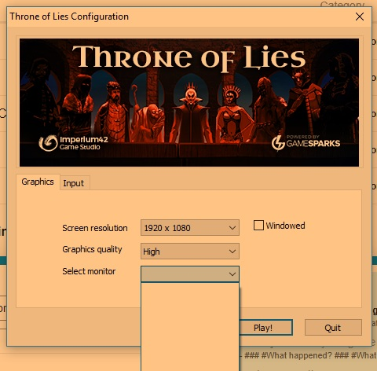

What happened?
I just installed the game and tried to launch, everything opens fine until I try to select which monitor the game should display on, but there are no options. If I click play then the application launches (can see on taskbar) and the music begins playing, but I cannot maximize it. Same issue if windowed mode is selected.
Tried launching on all graphics settings but problem persists.
What was SUPPOSED to happen?
Game launches normally
Steps to reproduce:
Probably not possible
Comments:
My computer detects the monitor no problem, and I have had no issues remotely like this in the past with any game. Tried using DirectX11 and Vulkan launch otions but no help. Hopefully the screenshot makes it clear what I am on about.
